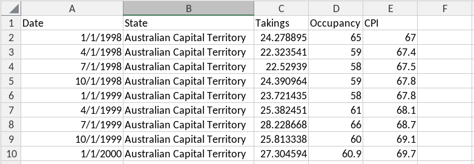

# A tibble: 66,037 × 5
Sensor Date_Time Date Time Count
<chr> <dttm> <date> <int> <int>
1 Birrarung Marr 2015-01-01 00:00:00 2015-01-01 0 1630
2 Birrarung Marr 2015-01-01 01:00:00 2015-01-01 1 826
3 Birrarung Marr 2015-01-01 02:00:00 2015-01-01 2 567
4 Birrarung Marr 2015-01-01 03:00:00 2015-01-01 3 264
5 Birrarung Marr 2015-01-01 04:00:00 2015-01-01 4 139
6 Birrarung Marr 2015-01-01 05:00:00 2015-01-01 5 77
7 Birrarung Marr 2015-01-01 06:00:00 2015-01-01 6 44
8 Birrarung Marr 2015-01-01 07:00:00 2015-01-01 7 56
9 Birrarung Marr 2015-01-01 08:00:00 2015-01-01 8 113
10 Birrarung Marr 2015-01-01 09:00:00 2015-01-01 9 166
# ℹ 66,027 more rowsActivities: Week 1
Time series data and patterns
Exercise 1
The pedestrian dataset contains hourly pedestrian counts from 2015-01-01 to 2016-12-31 at 4 sensors in the city of Melbourne.
The data is shown below:
Your turn!
Identify the index variable, key variable(s), and measured variable(s) of this dataset.
Hint
- The
indexvariable contains the complete time information - The
keyvariable(s) identify each time series - The measured variable(s) are what you want to explore/forecast.
index variable
key variable(s)
measured variable(s)
Exercise 2
The aus_accommodation dataset contains quarterly data on Australian tourist accommodation from short-term non-residential accommodation with 15 or more rooms, 1998 Q1 - 2016 Q2. The first few lines are shown below.

The units of the measured variables are as follows:
- Takings are in millions of Australian dollars
- Occupancy is a percentage of rooms occupied
- CPI is an index with value 100 in 2012 Q1.
Your turn!
Complete the code to convert this dataset into a tsibble.
Hint
Begin by loading the fpp3 library to use its time series functions.
library(fpp3)
Hint
After loading the fpp3 package, convert the data frame into a tsibble.
library(fpp3)
aus_accommodation <- read.csv(
"https://workshop.nectric.com.au/user2024/data/aus_accommodation.csv"
) |> mutate(Date = as.Date(Date))
Hint
Remember to specify the time index and key for as_tsibble() to function correctly.
library(fpp3)
aus_accommodation <- read.csv(
"https://workshop.nectric.com.au/user2024/data/aus_accommodation.csv"
) |>
mutate(Date = as.Date(Date)) |>
as_tsibble(key = State, index = Date)Exercise 3
Temporal granularity
The previous exercise produced a dataset with daily frequency - although clearly the data is quarterly! This is because we are using a daily granularity which is inappropriate for this data.
Common temporal granularities can be created with these functions:
| Granularity | Function |
|---|---|
| Annual | as.integer() |
| Quarterly | yearquarter() |
| Monthly | yearmonth() |
| Weekly | yearweek() |
| Daily | as_date(), ymd() |
| Sub-daily | as_datetime() |
Your turn!
Use the appropriate granularity for the aus_accommodation dataset, and verify that the frequency is now quarterly.
Hint
Start by reading the CSV file and transform the data using mutate() and yearquarter() for the Date column.
aus_accommodation <- read.csv(
"https://workshop.nectric.com.au/user2024/data/aus_accommodation.csv"
) |>
mutate(Quarter = yearquarter(Date))
Hint
After transforming the Date column, make sure you convert the data frame to a tsibble.
aus_accommodation <- read.csv(
"https://workshop.nectric.com.au/user2024/data/aus_accommodation.csv"
) |>
mutate(Quarter = yearquarter(Date)) |>
as_tsibble(key = State, index = Quarter)Exercise 4
The tourism dataset contains the quarterly overnight trips from 1998 Q1 to 2016 Q4 across Australia.
It is disaggregated by 3 key variables:
State: States and territories of AustraliaRegion: The tourism regions are formed through the aggregation of Statistical Local Areas (SLAs) which are defined by the various State and Territory tourism authorities according to their research and marketing needsPurpose: Stopover purpose of visit: “Holiday”, “Visiting friends and relatives”, “Business”, “Other reason”.
Below is a preview:
# A tsibble: 24,320 x 5 [1Q]
# Key: Region, State, Purpose [304]
Quarter Region State Purpose Trips
<qtr> <chr> <chr> <chr> <dbl>
1 1998 Q1 Adelaide South Australia Business 135.
2 1998 Q2 Adelaide South Australia Business 110.
3 1998 Q3 Adelaide South Australia Business 166.
4 1998 Q4 Adelaide South Australia Business 127.
5 1999 Q1 Adelaide South Australia Business 137.
6 1999 Q2 Adelaide South Australia Business 200.
7 1999 Q3 Adelaide South Australia Business 169.
8 1999 Q4 Adelaide South Australia Business 134.
9 2000 Q1 Adelaide South Australia Business 154.
10 2000 Q2 Adelaide South Australia Business 169.
# ℹ 24,310 more rowsCalculate the total quarterly tourists visiting Victoria from the tourism dataset.
Hint
To start off, filter the tourism dataset for only Victoria.
tourism |>
filter(State == "Victoria")
Hint
After filtering, summarise the total trips for Victoria.
tourism |>
filter(State == "Victoria") |>
summarise(Trips = sum(Trips))Exercise 5
Find what combination of Region and Purpose had the maximum number of overnight trips on average.
Hint
Start by using as_tibble() to convert tourism back to a tibble and group it by Region and Purpose.
tourism |>
as_tibble() |>
group_by(Region, Purpose)
Hint
After grouping, summarise the mean number of trips and filter for maximum trips.
tourism |>
as_tibble() |>
group_by(Region, Purpose) |>
summarise(Trips = mean(Trips), .groups = "drop") |>
filter(Trips == max(Trips))Exercise 6
Create a new tsibble which combines the Purposes and Regions, and just has total trips by State.
Hint
To summarise the number of trips by each State, start by grouping the data by State.
tourism |>
group_by(State)
Hint
After grouping, use the summarise() function to sum the trips.
tourism |>
group_by(State) |>
summarise(Trips = sum(Trips))